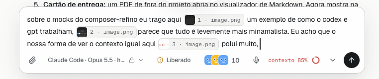

Revisão 3. Hoje é o seu print real. A proposta é desenhada com a mesma fonte do app e as medidas das classes reais de cada peça. Decidido até aqui: motor à direita, perto do enviar; o chevron do enviar (disputa e missão) continua; o seletor de motor é o de hoje, com o esforço em slider por etapas; os especialistas ficam como estão; o modo continua sempre à vista, como hoje (Pede, Só lê, Planejar, Auto, Liberado), e só o ícone do Liberado ganha âmbar (ADR-167).

| Instrução no campo | No cinza de metadado (faint), curta e sem "…". Rodando: "Corrigir agora ou deixar para depois"; quem mostra as duas saídas é o par Enfileirar | ⚡, que aparece quando você digita. |
| Motor | Só o logo e "Claude Code", à direita. Modelo e esforço ficam na dica e no seletor de hoje. O cadeado sai da linha: o seletor já separa "mesmo motor, mantém a sessão" de "outro motor". |
| Modo | Igual a hoje. Abaixo de 520px de rodapé, só o escudo (aba "Coluna estreita"), que é a regra que já existe. |
| Esforço | No seletor, a faixa de seis botões vira slider por etapas; as etapas vêm do motor (o Codex tem quatro), e "Padrão" é o voltar no canto. |
| Contexto | Em repouso, um medidor pequeno em pizza (lê como medida, não como carregando), cinza, número na dica. O que acontece quando ele sobe é a decisão abaixo. |
O mesmo momento nas duas: contexto em 85%, perto de o motor resumir a conversa sozinho.
Vira um segmento da tira, como a cota (ADR-281): nasce aberto na primeira vez, recolhe no clique, Compactar agora é o gesto, Dispensar encerra até a compactação. A linha do enviar nunca fica vermelha. Custo: o contexto passa a morar em dois lugares (anel sempre, segmento quando pede ação).
Só o medidor muda: fica âmbar a partir de 80%, sem o texto "contexto 85%" e sem vermelho. O clique abre o painel de contexto que já existe, com o compactar. Mais simples, e o aviso é mais discreto: dá para não ver.